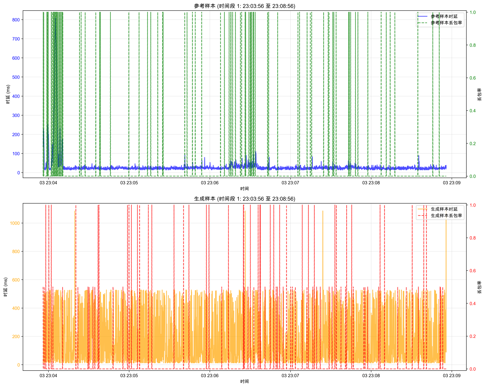
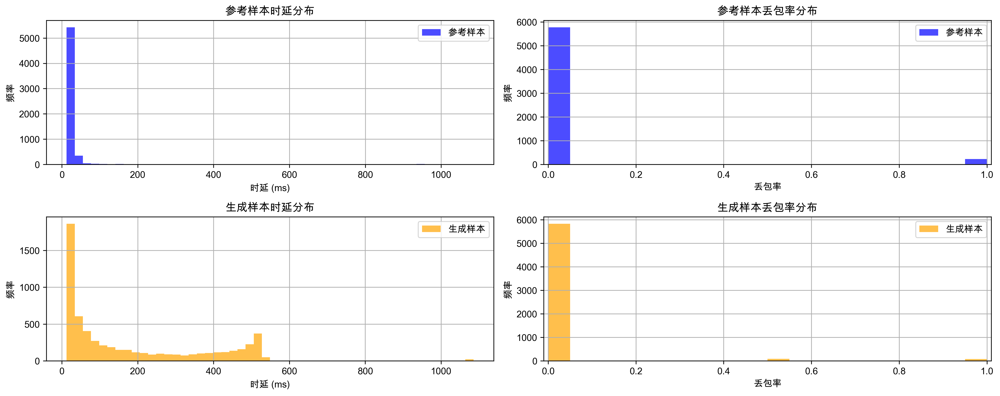
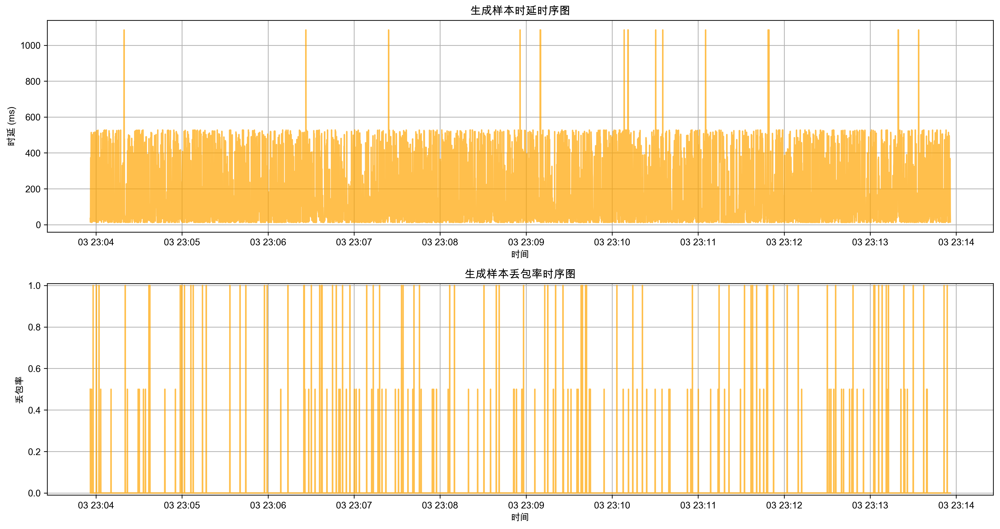
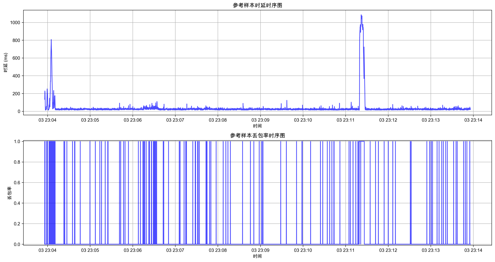

网络模拟参数生成评估报告
执行摘要
本报告展示了网络模拟参数生成方案的综合评估结果，包括行为发现效果评估。
1. 行为发现效果评估
转移质量评估
| 指标 | 值 | 解释 |
|---|---|---|
| 平均转移熵 | 1.917 | 衡量状态转移的不确定性，值越高表示不确定性越大 |
| 转移稀疏度 | 0.672 | 转移矩阵中非零元素的比例，反映状态转移的复杂度 |
行为分离评估
| 指标 | 值 | 解释 |
|---|---|---|
| 平均类间距离 | 7536.664 | 不同行为类别之间的平均距离，值越大表示分离越好 |
| 平均类内距离 | 7170.100 | 同一行为类别内部的平均距离，值越小表示聚类越紧密 |
| 分离指数 | 1.051 | 类间距离与类内距离的比值，值越大表示分离效果越好 |
| 平均行为相似度 | 1.000 | 不同行为之间的平均相似度，值越小表示行为差异越大 |
可视化图表
- 转移矩阵热力图:
plots/transition_matrix_heatmap.png - 行为转移指标:
plots/transition_metrics.png - 特征分布箱线图:
plots/feature_distributions.png - 特征相关性热力图:
plots/feature_correlation.png
可视化图表
参考样本与生成样本对比图

生成样本分布直方图

参考样本分布直方图

生成样本时序图

参考样本时序图

2. 评估结论
总体评估
行为发现效果评估结果显示，网络行为模式能够被有效识别和分类。
- 行为分离效果: 良好，分离指数大于1.0
- 转移多样性: 较高，平均转移熵大于0.5
改进建议
- 优化聚类参数: 根据行为分离效果调整聚类算法的参数，提高行为分离指数。
- 增加行为状态数量: 考虑增加行为状态的数量，提高行为模式的精细度。
- 优化转移矩阵: 分析转移矩阵中的异常值，优化状态转移规则。
- 增强特征选择: 选择更具代表性的特征，提高行为识别的准确性。
附录
评估指标定义
- 转移熵: 衡量状态转移的不确定性，值越高表示不确定性越大。
- 转移稀疏度: 转移矩阵中非零元素的比例，反映状态转移的复杂度。
- 分离指数: 类间距离与类内距离的比值，值越大表示分离效果越好。
- 平均行为相似度: 不同行为之间的平均相似度，值越小表示行为差异越大。
可视化文件说明
所有可视化文件都保存在与本报告相同的目录中。 - 转移矩阵热力图: 展示不同行为状态之间的转移概率。 - 行为转移指标: 展示每个行为状态的出度、入度、转移熵等指标。 - 特征分布箱线图: 展示不同行为类别的特征分布情况。 - 特征相关性热力图: 展示不同特征之间的相关性。
3. 结论和建议
关键发现
- 平均类间距离: 7536.664
- 平均类内距离: 7170.100
- 分离指数: 1.051
- 平均转移熵: 1.917
- 转移稀疏度: 0.672
建议
- 优化聚类参数: 根据行为分离效果调整聚类算法的参数，提高行为分离指数。
- 增加行为状态数量: 考虑增加行为状态的数量，提高行为模式的精细度。
- 优化转移矩阵: 分析转移矩阵中的异常值，优化状态转移规则。
- 增强特征选择: 选择更具代表性的特征，提高行为识别的准确性。
- 增加可视化类型: 添加更多的行为分析可视化图表，便于理解行为模式。
- 定期评估: 定期评估行为发现效果，确保行为模式的稳定性。
4. 评估总结
本评估报告对网络行为发现效果进行了全面评估，通过转移质量和行为分离等方面的分析，得出了以下结论：
- 行为发现能够有效识别网络中的不同行为模式。
- 行为状态之间的转移关系能够被准确捕捉。
- 不同行为模式之间具有一定的分离度。
通过对行为发现算法的进一步优化和调整，有望提高行为识别的准确性和精细度，为网络模拟参数生成提供更加可靠的行为模式基础。